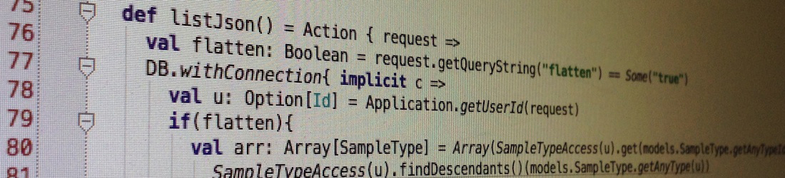

I'm interested in various topics of programming. Examples include scientific computing, data visualization, programming languages, program synthesis by domain specific language (DSL)s, web app development, etc. I particularly like statically typed modern programming languages such as Scala and Haskell.
Image processing
TCRAnalysis
- Analyze flurescence images of cells by various metrics.
- Visualize population of cells by extracted metrics.
- ImageJ plugin written in Scala.
Web app for science
Article Locator
- Finds online journal articles by citation.
- Written in JavaScript.
PaperServer
- Manages online journal articles on a web browser.
- Written in Haskell with Yesod web framework.
E-labnote
- Records experiments and sample information.
- Written in Scala with Play! web framework.
Data visualization
- Coauthor frequency histogram
- Written with Scala.js and D3.js
- Art timeline